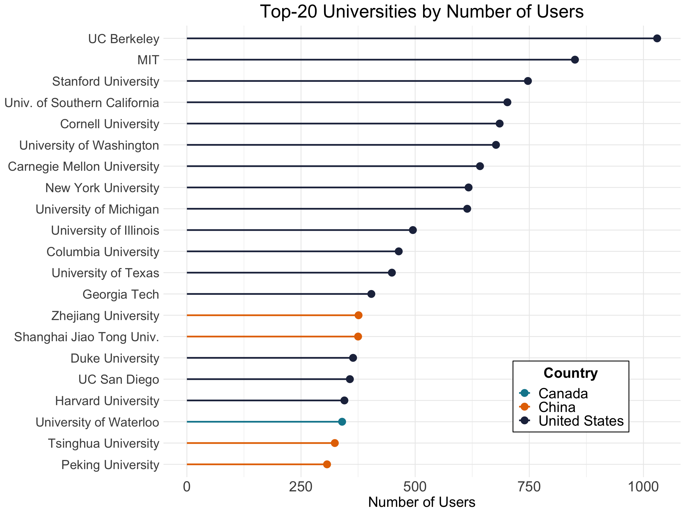

OSS in the Academic Sector
This page focuses on classifying GitHub users into academic institutions.
R nlp regex big dataOne of the main goals of our summer project is to understand who is producting open-source software (OSS) and important characteristics about them, including which sectors they are embedded within. This page focuses on the approach we took to classifying GitHub users into the academic sector as well as the prodcedures that we took to finding out which institutions they are affiliated.
First, cleaning hipolabs data before comparing it with github users.
Looking at the total numbers before any recoding.
Recoding the companies in users_gh, using string matching to catch name variations.
At this point, we have 29,134 users in the academic sector: 27,570 matched to academic institutions and 1,564 identified as misc. students.
We can boost this number by looking at the users' email domains.
New total is 40,894 users in the academic sector.
At this point, we can make a table of users in the academic sector to push to our database.
Now that we have the counts for GitHub users at academic institutions, we'd like to recombine this with the Hipo Labs data to get the country locations for these institutions.
Now let's look at some statistics.
Finally, let's plot some of this stuff.
